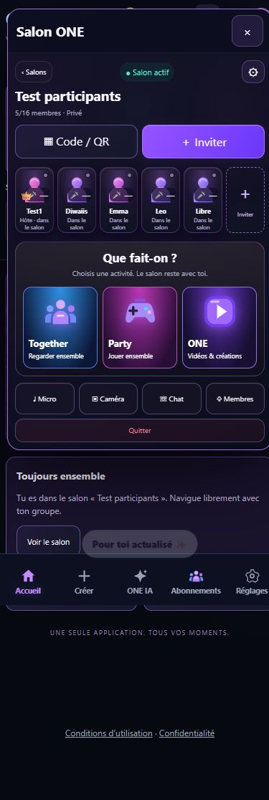
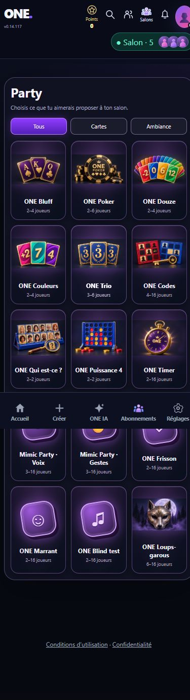
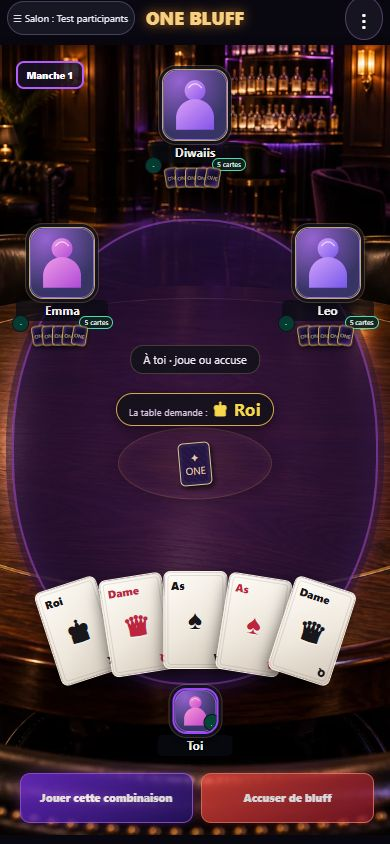
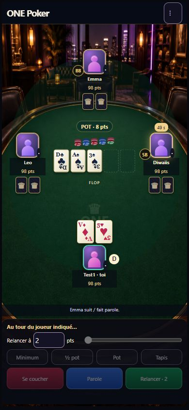
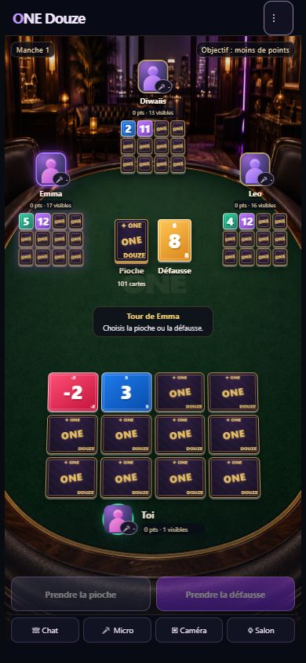
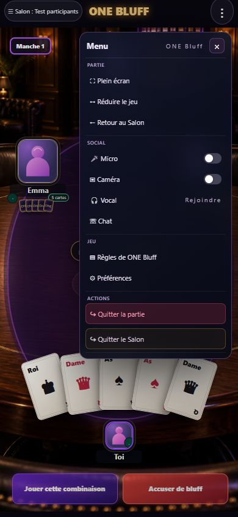

Frontend du projet, exécuté localement. Comptes de test sans caméras : avatars de remplacement.
Validation visuelle à faire avec Anthony. Aucun déploiement effectué.
Télécharger le ZIP complet · Rapport · Salons publics · Création





